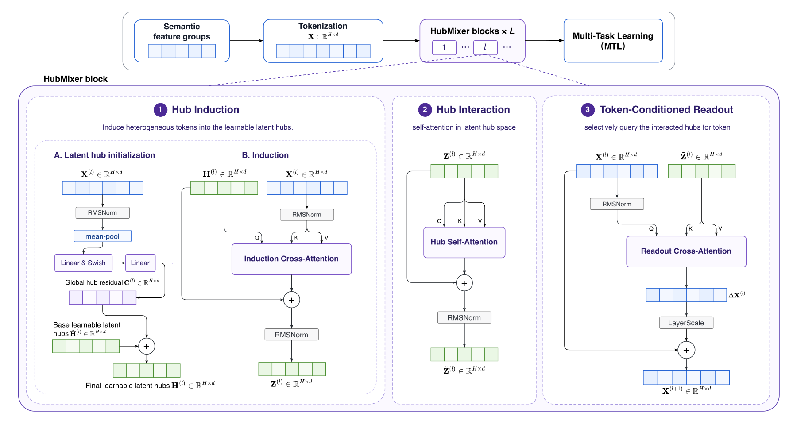
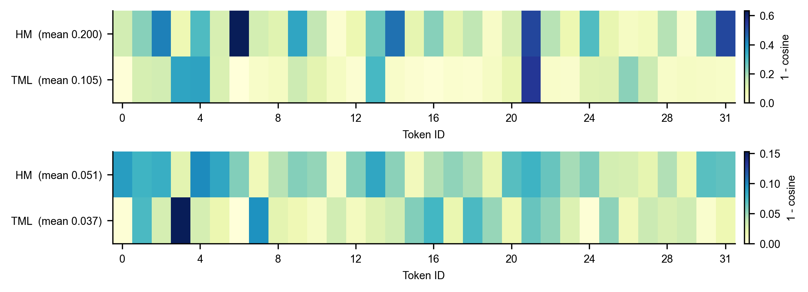
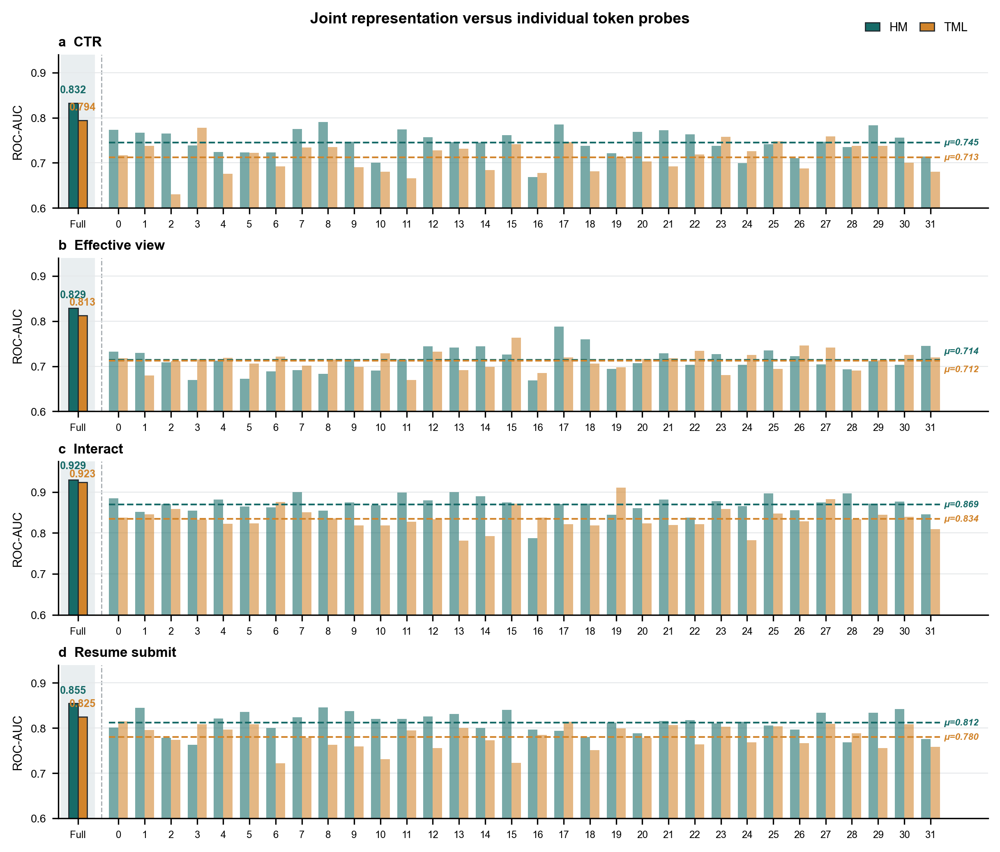

我的判断：做排序模型特征交互的团队可以花十分钟看结构，但不必急着复现。它的想法清楚、实现简单，而且已经在快手招聘业务全量上线；问题是离线收益很小，论文里的效率说法在它自己的配置下并不成立。核心思想一句话：不让 32 个特征 token 直接互相混合，而是先用 16 个可学习的“枢纽”向量通过注意力把 token 汇总起来，在枢纽之间做自注意力，再让每个 token 按需从枢纽里读回信息。几个关键数字：四个任务的平均 AUC 比最强基线 TokenMixer 高 0.0015（0.8256 对 0.8241），参数从 156.9M 降到 142.4M；去掉枢纽之间的交互，平均 AUC 掉回 0.8232；线上 7 天、7.2% 流量的 A/B 中，简历投递转化率提升 5.48%。
它要解决什么问题？
现在的排序模型常把特征按语义分组，每组压成一个向量，称为一个特征 token。最近的 RankMixer、TokenMixer 一类结构用轻量的混合操作代替自注意力，让这些 token 互相交换信息，硬件效率高，容易做大。
论文的出发点是：推荐的 token 和语言 token 不一样，彼此差别很大。用一个示意例子看招聘场景里的几类 token：
| 示意 token | 内容 | 和谁交互才有用 |
|---|---|---|
| 用户求职意向 | 想找“物流 / 司机”类工作 | 岗位类目、薪资 |
| 历史点击序列 | 最近看过的 20 个岗位视频 | 当前岗位类目 |
| 岗位类目 | 快递分拣员 | 求职意向、历史点击 |
| 上下文 | 晚上 9 点、在通勤路上 | 主要调节时效类特征 |
| 统计特征 | 这个岗位近 7 天投递率 | 和大多数 token 关系都弱 |
有用的交互是稀疏的，而且每个样本不一样。以 RankMixer 为例，它把每个 token 切成 T 段，第 h 个新 token 由所有 token 的第 h 段拼成，这种混合方式是固定的，和样本内容无关。把所有 token 放在一个平面空间里直接混合，模型要自己从数据里找出“谁该和谁交互”，作者认为这会浪费参数。
HubMixer 的回答是加一层中间结构：先把 token 归到少数几个可学习的“枢纽”（hub，论文自创的叫法，指一组可学习的查询向量），在枢纽空间里做交互，再写回 token。这个思路来自多模态里的 Q-Former（用少量可学习查询向量从图像特征里提取信息）和 OneRec 用查询向量压缩长序列的做法，不同之处在于它用在普通特征 token 上，而且最后要把信息写回每个 token。
先看全景

| 步骤 | 做什么 | 为什么需要 |
|---|---|---|
| 0. 生成本样本的枢纽 | 16 个基础枢纽向量，加上由本样本 token 平均值算出的残差 | 让枢纽带一点样本信息，不完全是固定模板 |
| 1. 枢纽归纳 | 枢纽当查询、token 当键和值，做交叉注意力 | 每个枢纽按内容挑选和自己相关的 token 汇总 |
| 2. 枢纽交互 | 16 个枢纽之间做自注意力 | 在已经汇总过的信息上做高阶交互 |
| 3. 按 token 读出 | 每个 token 当查询，从交互后的枢纽里读信息 | 每个 token 读自己需要的部分，保留字段身份 |
| 4. 残差写回 | 读出结果乘以逐维缩放系数，加回原 token | 控制更新幅度，堆多层时更稳定 |
| 5. 多任务输出 | 最后一层的 32 个 token 拼接，送进四个任务头 | 下游仍能看到每个字段各自的表示 |
实验配置是 32 个 token、16 个枢纽、2 层，所有混合类模型都用同样的 token 数和层数。
拆开看：三步各自在做什么
枢纽归纳怎么挑 token？ 每个枢纽是一个查询向量，和 32 个 token 分别算注意力分数，softmax 后加权求和。示意：只看 1 个枢纽和 3 个 token，分数是 2、1、0，softmax 后约为 0.67、0.24、0.09，这个枢纽的内容就主要来自第一个 token。分数取决于 token 的内容，所以同一个枢纽在不同样本上会汇总不同的 token 组合，这就是论文说的“按样本路由”。
为什么要先给枢纽加一个样本残差？如果枢纽完全固定，它们对所有样本提出的是同一组问题。作者把 32 个 token 取平均，经两层网络（Swish 激活）生成一个 16×d 的残差加到基础枢纽上，让问题本身也随样本变化。
枢纽交互为什么必须有？ 归纳只是“汇总”，每个枢纽只看到自己挑中的 token。第二步让 16 个枢纽之间做自注意力，比如“求职意向枢纽”和“岗位语义枢纽”交换信息，才形成跨特征组的组合信号。消融也支持这一点：去掉这一步，四个任务的 AUC 全部下降，平均从 0.8256 降到 0.8232，是所有改动里掉得最多的。
为什么要按 token 读出，而不是把枢纽池化成一个向量？ 最省事的做法是把 16 个枢纽平均成一个全局向量，加到所有 token 上。但这样每个 token 收到的是同一份信息。按 token 读出让每个 token 用自己当查询，从枢纽里取一份定制的组合：岗位类目 token 可能多读“求职意向”枢纽，上下文 token 可能多读“时效”枢纽。读出结果再乘以一个逐维的可学习缩放系数（论文称 LayerScale），加回原 token。示意：只有 2 个枢纽，岗位类目 token 对它们的注意力是 0.9 和 0.1，上下文 token 是 0.2 和 0.8，两个 token 从同一组枢纽里读到的内容就完全不同；如果某一维的缩放系数是 0.1，读出值 2.0 在这一维只给原 token 加 0.2。这样读出的信息不会一下子盖掉原 token，堆多层时也不容易发散。消融里换成池化后加到所有 token 上，平均 AUC 是 0.8247，比完整模型低 0.0009，比去掉枢纽交互的损失小。这说明全局信息本身有用，按 token 定制带来的是第二层收益。
输出为什么还是 32 个 token？ 因为四个任务（点击、有效观看、互动、投递简历）依赖的特征组合不同，保留每个 token 的独立表示，任务头可以各取所需。最后一层的 32 个 token 直接拼接，送进多任务模块，损失是四个二分类交叉熵的加权和。
实验：真的更好吗？
数据是快手短视频招聘业务一个月的日志，超过 10 亿样本，业务覆盖约 4000 万日活。四个目标从浅到深：点击、有效观看、互动、投递简历。所有模型用同样的特征、向量维度、优化器、批大小和任务权重。
| 模型 | 点击 | 有效观看 | 互动 | 投递简历 | 平均 AUC | 参数量 |
|---|---|---|---|---|---|---|
| DCNv2 | 0.8194 | 0.8468 | 0.8361 | 0.7825 | 0.8212 | 157.5M |
| Wukong | 0.8183 | 0.8461 | 0.8365 | 0.7822 | 0.8208 | 154.6M |
| RankMixer | 0.8221 | 0.8495 | 0.8389 | 0.7845 | 0.8238 | 155.1M |
| TokenMixer | 0.8227 | 0.8491 | 0.8394 | 0.7852 | 0.8241 | 156.9M |
| HubMixer | 0.8253 | 0.8507 | 0.8401 | 0.7864 | 0.8256 | 142.4M |
先看两类基线之间的差距：DCNv2、Wukong 这类传统交叉结构的平均 AUC 在 0.821 左右，RankMixer 和 TokenMixer 在 0.824 左右，说明在这份数据上，token 混合类结构本身就比显式交叉好一截。HubMixer 四个任务都最好，参数比 TokenMixer 少约 9%。这说明在相同 token 设定下，枢纽结构至少不比平面混合差，而且更省参数。但绝对提升很小：对 TokenMixer，点击 +0.0026，投递简历只有 +0.0012。论文没有报多次运行的方差或显著性，这种量级的差距是否稳定，无法从论文里判断。
枢纽数量的实验显示 16 个基本够用：
| 枢纽数 | 平均 AUC | 参数量 |
|---|---|---|
| 4 | 0.8238 | 136.1M |
| 8 | 0.8248 | 138.3M |
| 16（默认） | 0.8256 | 142.4M |
| 32 | 0.8258 | 150.8M |
从 16 加到 32，平均 AUC 只多 0.0002，参数多 8.4M，所以作者选 16。值得注意的是 4 个枢纽时平均 AUC 是 0.8238，和 RankMixer 持平，参数却少 19M。
作者还做了两个表示分析，对象是最强基线 TokenMixer。第一个看每个块让 token 方向变了多少，指标是输入和输出的余弦距离（1 − 余弦相似度）。

这说明 HubMixer 往 token 里写入了更多新信息。但改得多不等于改得好，所以第二个分析是线性探针：冻结训练好的主干，只在每个 token（或 32 个 token 拼起来）上训一个线性分类器，看 AUC。

这说明 HubMixer 的 token 里，任务相关信息更容易被线性读出来，作者据此认为它的收益不只是“扰动更大”。
线上 A/B 持续 7 天、覆盖 7.2% 的流量，主指标简历投递转化率提升 5.48%，统计显著，之后全量上线。
我认为它的局限
第一，效率说法在它自己的配置下不成立。论文说两次交叉注意力的成本随 T×H 增长，而不是 T²，但这要求枢纽数远小于 token 数。实验里 T=32、H=16，只差一半。按需要计算注意力分数的“查询—键”配对数量算：归纳 32×16=512，枢纽交互 16×16=256，读出 32×16=512，合计 1280；32 个 token 直接两两做自注意力是 32×32=1024。所以在这个配置下，枢纽结构的注意力计算反而更多。论文的对比对象是 TokenMixer 而不是自注意力，也没有报 FLOPs、延迟或吞吐，“更高效”只体现在参数量上。
第二，离线提升小，而且缺少稳定性证据。对 TokenMixer 的平均 AUC 只高 0.0015，论文没有多随机种子的结果，也没有说明基线是否调过参。参数量是整体数字，没有拆出嵌入表和交互层各占多少，所以少的 14.5M 到底来自哪里不清楚。
第三，分析和线上实验有几处说不清。线性探针的拼接 AUC（点击 0.832、投递简历 0.855）比完整模型自己的 AUC（0.8253、0.7864）还高，说明探针用的是另一套数据或另一种设置，但论文没交代，这让 0.832 对 0.794 的差距难以和主表对照。线上 5.48% 是相对“基线模型”的，论文没说基线是 TokenMixer、RankMixer 还是别的结构，所以无法判断其中多少来自 HubMixer 本身。
一个排序团队可以怎么试
- 如果线上已经是 RankMixer 或 TokenMixer 这类 token 结构，把其中一层换成枢纽结构，枢纽数先取 token 数的四分之一（论文里 4 个枢纽已经追平 RankMixer）。这样注意力计算量才真的低于两两交互。
- 先做两个消融：去掉枢纽间交互、把按 token 读出换成池化。如果前者掉得不明显，说明自己的场景里收益不来自这个结构。
- 用至少 3 个随机种子评估，确认 AUC 差距大于种子间波动再推进。
- 同时记录参数量（拆开嵌入表和交互层）、FLOPs 和线上延迟，不要只看参数量。
- 线上 A/B 的对照组用当前生产结构，并在相同特征下比较，避免把特征或训练变化的收益算到结构上。
一句话结论
HubMixer 把 Q-Former 式的“少量查询向量汇总再写回”搬到了排序特征交互上，结构合理、已全量上线，但离线收益只有千分之一到千分之二，效率优势在 T=32、H=16 的配置下并不存在，适合当作一个可以低成本试一下的备选结构。
| 维度 | 评价 |
|---|---|
| 问题重要性 | 中高。特征交互结构是排序模型的核心组件 |
| 方法创新性 | 中。把可学习查询向量用于特征交互并写回 token，组合有新意，但每个部件都很常见 |
| 实验证据 | 中低。单一数据集、无方差、无 FLOPs 和延迟；线上对照组未说明 |
| 工程成本 | 低。三个注意力模块，替换现有 token 混合层即可 |
| 是否值得尝试 | 可以低成本试，枢纽数要明显小于 token 数 |
| 适用场景 | 已经把特征切成 token、在用 RankMixer 或 TokenMixer 一类结构的排序模型 |